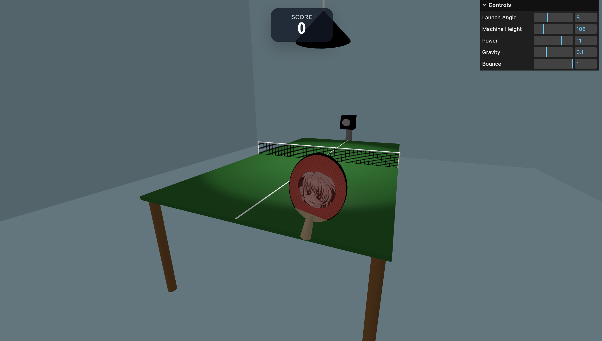

3D Ping Pong
CS 360 Graphics Project by Srijan Basnet & Ethan Woodard
Project Description
This project is a 3D ping pong game built with Three.js. The scene includes a full table tennis setup with a modeled table, net, lighting, room environment, and a custom paddle that the player controls in real time. A ball launcher on the opposite side of the table serves balls toward the player, and the goal is to return each shot successfully. The game keeps track of your score, and the difficulty increases as you score more points, making each rally more challenging. The paddle also supports a custom logo texture, adding a small personalization feature to the project.
Our project recreates the classic table tennis experience with realistic physics, responsive controls, and immersive gameplay using modern web graphics.

Features
- Fully interactive 3D ping pong table and environment.
- Realistic ball physics and paddle collisions.
- Smooth mouse-controlled paddle movement.
- Dynamic camera perspectives for immersive gameplay.
- Single-player practice and competitive play.
Development Highlights
This project was built using Three.js and demonstrates concepts from computer graphics, including hierarchical modeling, lighting, textures, collision detection, and real-time animation.
Creating a responsive and realistic table tennis experience required careful tuning of physics parameters, paddle controls, and camera behavior.
How To Play
Press the spacebar to start a round and launch the ball. Move your mouse to control the paddle on your side of the table. The paddle follows the mouse and can move up, down, and side to side to return the ball. Your goal is to hit the ball back over the net and onto the opponent’s side of the table. Each successful return that completes the rally earns you a point. As your score increases by 5, the launcher serves faster and more difficult shots until it gets to 25, at which point it stops getting harder. You can also drag and drop an image file into the window to change the paddle logo.
Play the Game
Ready to test your reflexes? Launch the project and start playing.
Play Ping Pong